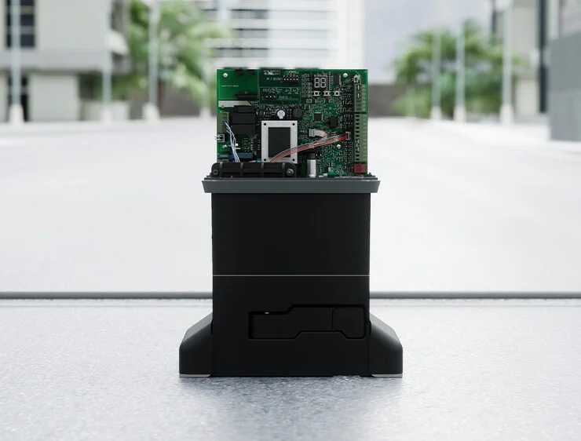

Automation for sliding gates with weight up to 1800 Kg
Renewed gear motors thanks to the integrated E781 control board which offers adjustable speed control levels. Includes two dedicated inputs for safety edges (NC or 8.2 KOhm) and Bus2Easy technology.
New retroactive motor control equipped with high-resolution encoder, the 844 C offers smoother acceleration/deceleration ramps, optimized power, reduced energy consumption, and adjustable obstacle detection sensitivity.
Compatible with Simply Connect and the new FDS radio technology.


Silent movement. Oil bath technology provides superior movement experience.
Intensive use. The presence of oil ensures efficient heat dissipation and improves usage frequency.
Extended life. The lubricating action of oil reduces friction between components for reliable automation with low maintenance, long durability, and high performance over time.

E781 integrates a wide range of technologies and innovations to maximize gear motor compatibility with the FAAC universe.
Programming via display and buttons, numerous configurable parameters, two independent inputs for safety edges, and two programmable outputs.
Technical Information